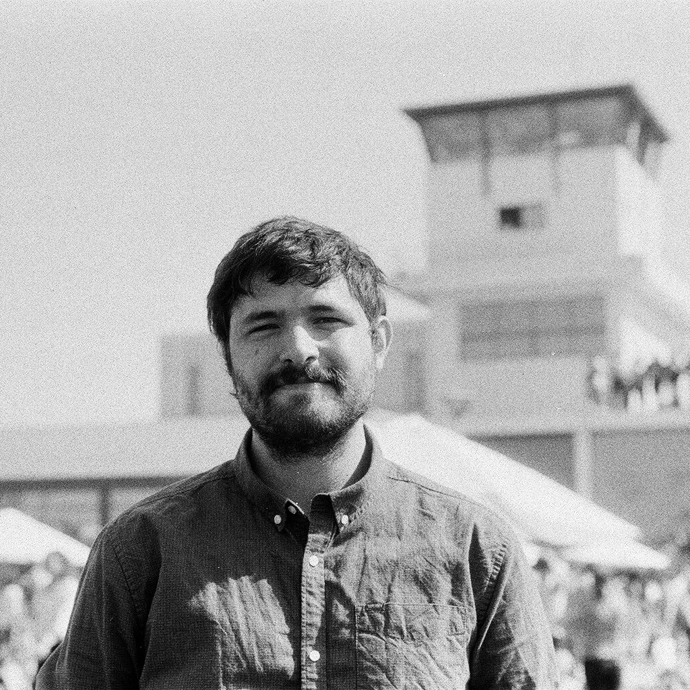

I am an environmental economist studying how natural capital can address today's climate challenges while sustaining long-run human welfare. My research examines how ecosystem service losses interact with inequality and welfare, and the ecosystem service trade-offs that may emerge from nature-based climate mitigation strategies.

Current projects examine natural capital, ecosystem services, nature-based climate mitigation, and the distributional impacts of environmental change across local and global settings.
Submitted
We examine the interaction between ecosystem-service losses and inequality, and how this interaction changes the social cost of carbon.
Global warming, ecological decline and inequalities are interconnected, yet rarely jointly. We investigate how damages to the environment change the social cost of inequalities, and how inequalities influence the social value of ecosystem services. We show that the answer depends on two parameters: inequality aversion, and substitutability between market goods and environmental goods. When both parameters are high, inequality increases the marginal value of the environment. This is not always the case when both parameters are low. We quantify this interaction by building a climate-economy model that includes ecosystem services and features both national and international inequalities. In our main calibration, the presence of national inequality doubles the marginal social cost of damages to the environment, while cross-country inequalities only cause a small increase. Overall, our findings show that the interactions of inequalities and ecosystem services can be quantitatively important for the assessment of conservation, climate, or redistributive policies.
We study whether expanding exotic tree plantations creates a trade-off between carbon mitigation and freshwater availability.
Increasing tree cover area is often promoted as an effective policy to meet carbon mitigation goals. However, the expansion of exotic monoculture industrial tree plantations (ITP) can disrupt local ecosystem services. This paper studies the impact of these plantations on freshwater provision using watershed-level data and panel variation in land-cover change in Chile. Our results indicate a delayed but robust negative effect of ITP expansion on freshwater availability. A one percentage point increase in ITP conversion reduces annual normalized net outflow by approximately 0.23 m3/s · year per km2 after 7 to 9 years — equivalent to roughly 12% of mean annual net outflow at observed expansion rates.
I study whether industrial tree plantations increase wildfire damages and how landscape management can better balance carbon sequestration with fire resilience.
Recognized as an emerging policy scholar by the Policy Studies Organization.
Presented "Global warming, ecosystems and inequality" at the NBER–BI–NYU Climate and Nature Finance Conference in Oslo
Finished my visit at Universidad Católica de Chile and the Landscape Ecology Lab at Universidad de Concepción.
Participated in the 2025 Berkeley/Sloan Summer School in Environmental and Energy Economics.
Awarded with a 2025-2026 Earth Scholar fellowship .
Email: iroliva@ucdavis.edu
Affiliation: Department of Agricultural and Resource Economics, University of California, Davis
Location: Davis, CA